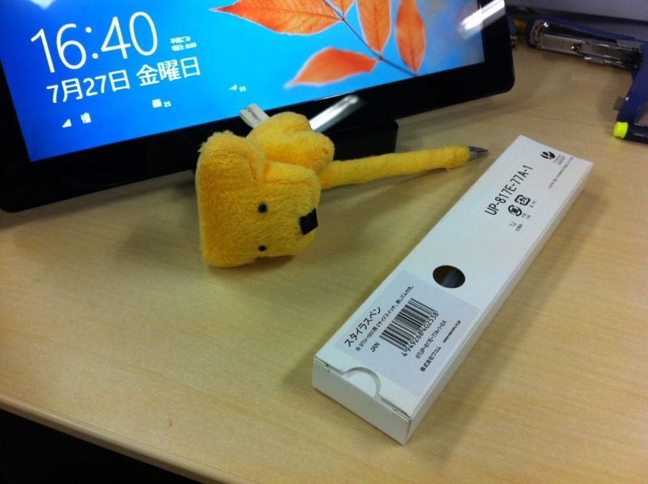
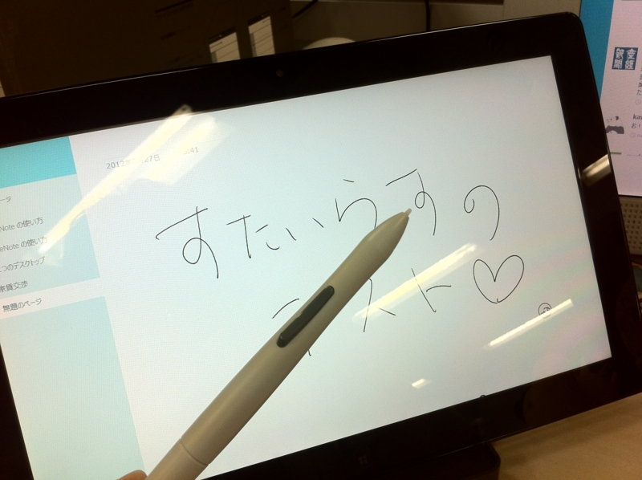

Windows 8 + ペンタブ。
公開日：

Samsung Series 7 Slate（S7S）のスタイラスをなくしちゃったっぽいので、 Amazon で購入。簡素な梱包だったけれど、正直な話、みんなコレでいいよ。梱包は最低限でいいと思う。 S7S に付属のペンは 1ボタン なのだけれど、こいつは「2サイドスイッチ・消しゴム付き筆圧ペン/穴付き」とのこと。

Wacom DTU-1931用スタイラスペン UP-817E-77A
- 出版社/メーカー: ワコム
- メディア: Personal Computers
- この商品を含むブログを見る
やりたかったのは、「One Note MX」（Metroスタイルアプリ版「OneNote」、「OneNote MX」がプレビュー版として無償公開 - 窓の杜）で手書きメモ。

ちょっとだけやってみたけれど、指で絵を描くのとはまた違って、ちゃんと“メモをとっている”という気分がする。あと、やっぱり指よりも誤タップが減るのでいいな。いつもペンをもっている必要があるというのも不便だけれど、ペンを使いたい時っていうのはやっぱりある。
Windows 8 スレートではその両方に対応するのが主流になりそうなので、これは iPad と比べた時のアドバンテージになりうる。だって、 iPad で使えるペンを探すと結構大変なんだもの……

Adonit Jot Flip ボールペン一体型スタイラスペン シルバー JOTF-SV
- 出版社/メーカー: プリンストン
- 発売日: 2012/05/25
- メディア: エレクトロニクス
- 購入: 4人 クリック: 132回
- この商品を含むブログ (4件) を見る

- 出版社/メーカー: ワコム
- 発売日: 2011/05/27
- メディア: Personal Computers
- 購入: 30人 クリック: 465回
- この商品を含むブログ (24件) を見る
一応この二本をもっているけれど*1、どっちも一長一短といった感じでワコムのペンタブほどはしっくりとこない*2。
*1:Bamboo スタイラスは WDD のおみやげだ！ https://blog.daruyanagi.jp/entry/2012/04/26/050929
*2:どっちかっていうと、 Banboo のほうが好み。壊れにくそうなんだもん！